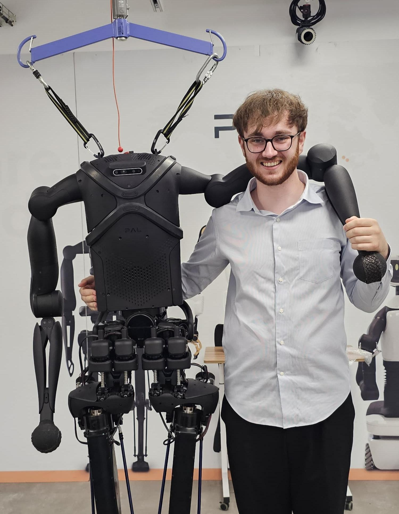
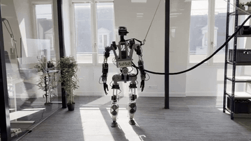

I'm Louis Le Lay. I build learning-based controllers to make humanoid robots agile and useful.
At UMA, I lead locomotion and simulation for ASTRO, from bare hardware to walking and whole-body teleoperation. I deploy the same stack across the Unitree G1, AgiBot X2, and Booster K1.
Previously, I built the first RL locomotion controller for PAL Robotics' Kangaroo, a serial-parallel humanoid, replacing its legacy MPC walker. I am also a co-author of mjlab and an active contributor to Isaac Lab.




Experience
Leading sim-to-real robot learning across humanoid platforms.
Built the complete sim-to-real RL locomotion stack for Kangaroo, a serial-parallel humanoid. Supervised by Sai Kishor Kothakota.
Multimodal perception for legged robots. Supervised by Prof. An.
Publications
For a complete and up-to-date list, see my Google Scholar.
Software


Talks
- From Arms to Humanoids: an RL Journey — Invited talk at INIT Robots Lab, Apr 2026.
- Teaching a Full-Size Humanoid to Walk with RL, from Scratch — Master's thesis defense, Sorbonne University, Apr 2026.
- Training and Deploying RL Agents for Manipulation on the SO-ARM — Talk at ROSCon España, Nov 2025.
Press & Mentions
- MACHINA Summit 2026 — Rémi Cadene Keynote — ASTRO Version 0's locomotion and whole-body teleoperation were featured in the keynote. Jul 2026. [ video ]
- UMA / ASTRO Version 0 — Selected Coverage — Coverage of UMA's first humanoid prototype, including its locomotion, push recovery, and whole-body teleoperation. Jul–Aug 2026. [ BFM Tech · Journal du Net · French Tech Journal · L'Embarqué ]
- BFM Business — Les Experts de l'IA — Olivier Stasse (Research Director, LAAS-CNRS) cited me as an example of rapid progress in humanoid robotics. Jun 2026. [ video ]
- VivaTech 2026 — Live Demo with PAL Robotics × LAAS — Referenced by Olivier Stasse (Research Director, LAAS-CNRS) for my work on Kangaroo's RL locomotion. Jun 2026. [ video ]
Education
- Sorbonne University · Master of Engineering, Robotics — 2022 – 2026
- ÉTS Montréal · Master of Engineering, Information Technology — 2024 – 2026